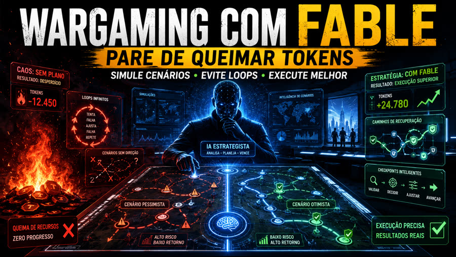
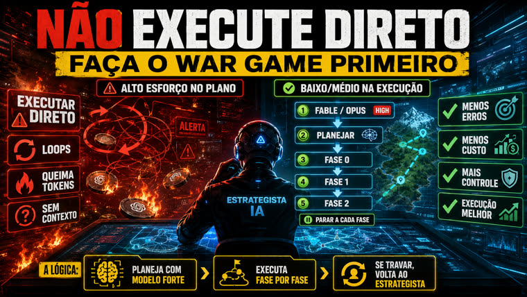

Um prompt pronto que transforma qualquer briefing de projeto num war game: fases com suposição otimista/pessimista, modos de falha, critérios de saída verificáveis e uma tabela mestre de riscos — tudo antes de escrever a primeira linha de código.

É um texto único — em EN e PT-BR — que você cola no início de uma conversa com sua IA de planejamento antes de pedir qualquer execução. Não precisa instalar nada.
Cada fase é obrigada a declarar objetivo, suposição otimista, suposição pessimista, modos de falha com correção e critérios de saída verificáveis — antes de existir código.
Uma tabela única cobrindo infraestrutura, particularidades da API do modelo, frontend, qualidade de conversa, segurança e loop de aprendizado, cada cenário com detecção e recuperação.
Desenha uma revisão semanal que varre as conversas em busca de prompt injection e ajusta o estilo do agente dentro de limites rígidos — nenhuma mudança vai pra produção sem avaliação de regressão e aprovação explícita.
A lógica por trás do prompt: um esforço alto de raciocínio no planejamento compra um esforço baixo/médio — e muito mais previsível — na execução.
Nada além de um briefing e um modelo capaz de planejamento longo — não há instalação, dependência ou build.
A descrição do que você quer construir — quanto mais concreta (stack, integrações, dono do projeto), melhor o plano.
# o que estamos construindo "Um agente de chat com tour guiado + qualificação de lead..."
Escolha o idioma e copie o arquivo correspondente do repo.
# EN cat doc/war-game-prompt.md # PT-BR cat doc/prompt-war-game-portugues.md
Um modelo com raciocínio alto (ex.: Claude Opus/Fable em modo "high"), de preferência com acesso a ferramentas de pesquisa.
# cole o prompt preenchido como a 1ª mensagem # sem contexto prévio
O prompt foi desenhado para um "cold-start agent" — funciona melhor como a primeira mensagem de uma conversa nova, sem nenhum contexto anterior do projeto.
Os dois arquivos são equivalentes — escolha o do idioma em que você vai conversar com a IA.
cat doc/prompt-war-game-portugues.md # ou doc/war-game-prompt.md (EN)
Troque cada [PROJETO], [Claude Haiku], [Supabase Edge Functions], [workshops/serviços] etc. pelos detalhes reais do seu projeto — modelo, infraestrutura, stack, entregáveis esperados.
# antes Plan a full build of [PROJECT], but do it as a war game. # depois Plan a full build of the Prompt Advisers website chat agent, but do it as a war game.
Sem preâmbulo, sem contexto extra — o prompt já pede tudo que a IA precisa saber pra planejar do zero.
nova conversa → colar o prompt preenchido # 1ª mensagem, sem histórico
Se a IA parar antes de entregar os dois formatos pedidos no prompt, peça explicitamente pelos dois.
1. plano em Markdown (preâmbulo, caminho crítico, stack, estrutura, metodologia) 2. versão visual em HTML com diagramas da arquitetura e de cada fase
Pare a cada fase, confira os critérios de saída, e só então siga pra próxima. Se travar, volte pro plano antes de forçar a execução.
fase 0 → checar critérios de saída → fase 1 → ...
Os dois HTMLs abaixo (doc/war-game.html em EN e doc/war-game-portugues.html em PT-BR) são a saída real do prompt aplicada ao caso PA-CHAT-V0 — um agente de chat com Claude Haiku + Supabase — e servem de referência de "pronto".

Abrir dossiê de exemplo (EN) →
Abrir dossiê de exemplo (PT-BR) →
O prompt está estável nas duas línguas. Próximos passos possíveis, sem compromisso de prazo.